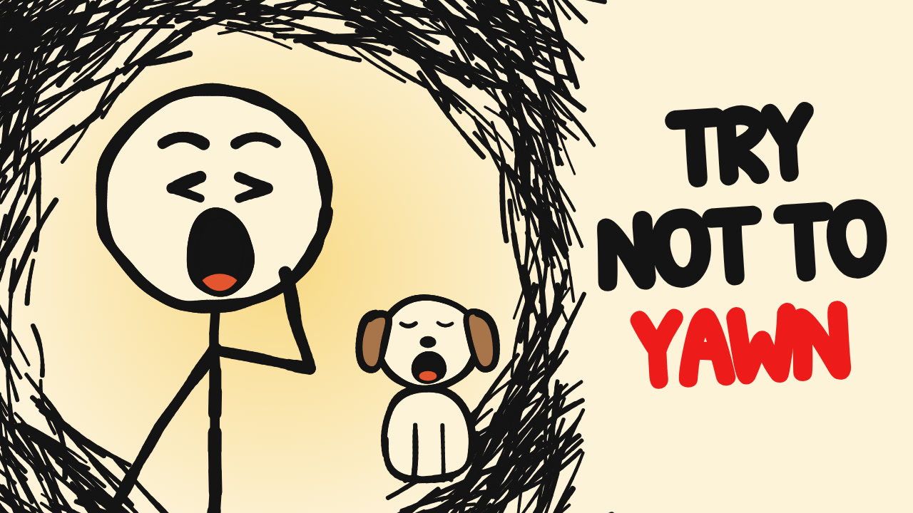

THE LATEST STORY02 / CONTAGIOUS

▶ Watch on YouTube · 5:24EVERYDAY PSYCHOLOGYYou Will Yawn
You Will Yawn
Before This
Video Ends.
Why does your body copy a yawn from a total stranger?
It is not about oxygen, it might be a fan for your brain, and scientists are still arguing about the rest.
Watch the story ↗A little context & further reading +
Yawning is still an open question. Brain cooling is a leading idea, not a settled fact, and researchers disagree about how much contagious yawning has to do with empathy.